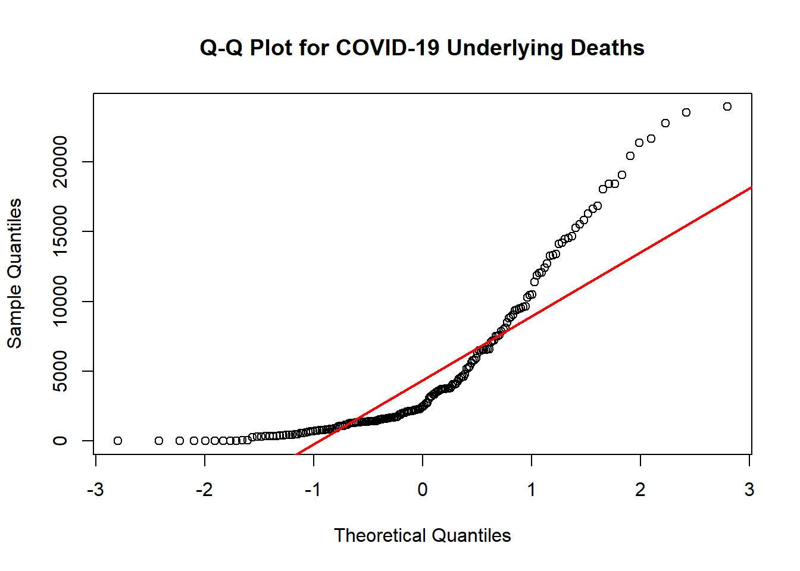

The original dataset (10,476 rows and 35 columns) contains weekly counts of death by cause, week and geographical location.
Date Range: Weekly data from 2020 to 2023.
Geographic Scope: Includes state-level data and “United States” as an aggregated entry.
Due to privacy protection, cells with count under 10 has been supressed and shown as blank. We will generate a random whole number between 1-10 for those cells for further analyses.
library(tidyverse)
library(lubridate)
library(viridis)
library(broom)
library(plotly)
library(datasets)
library(usmap)set.seed(123)Import data and do some inital cleaning
data = read_csv("data/weekly_deaths_by_state_and_causes.csv") %>%
rename(
`Septicemia` = `Septicemia (A40-A41)`,
`Malignant neoplasms` = `Malignant neoplasms (C00-C97)`,
`Diabetes mellitus` = `Diabetes mellitus (E10-E14)`,
`Alzheimer disease` = `Alzheimer disease (G30)`,
`Influenza and pneumonia` = `Influenza and pneumonia (J09-J18)`,
`Chronic lower respiratory diseases` = `Chronic lower respiratory diseases (J40-J47)`,
`Other respiratory diseases` = `Other diseases of respiratory system (J00-J06,J30-J39,J67,J70-J98)`,
`Kidney Disease` = `Nephritis, nephrotic syndrome and nephrosis (N00-N07,N17-N19,N25-N27)`,
`Other Symptoms` = `Symptoms, signs and abnormal clinical and laboratory findings, not elsewhere classified (R00-R99)`,
`Diseases of heart` = `Diseases of heart (I00-I09,I11,I13,I20-I51)`,
`Cerebrovascular diseases` = `Cerebrovascular diseases (I60-I69)`,
`COVID-19 (Multiple)` = `COVID-19 (U071, Multiple Cause of Death)`,
`COVID-19 (Underlying)` = `COVID-19 (U071, Underlying Cause of Death)`
) %>%
janitor::clean_names() %>%
rename(state = jurisdiction_of_occurrence) %>%
mutate(data_as_of = mdy(`data_as_of`),
year = year(week_ending_date),
month = month(week_ending_date)
) %>%
select(state, year, month, mmwr_week, week_ending_date, all_cause: covid_19_underlying)## Warning: One or more parsing issues, call `problems()` on your data frame for details,
## e.g.:
## dat <- vroom(...)
## problems(dat)## Rows: 10476 Columns: 35
## ── Column specification ────────────────────────────────────────────────────────
## Delimiter: ","
## chr (14): Data As Of, Jurisdiction of Occurrence, flag_sept, flag_diab, fla...
## dbl (17): MMWR Year, MMWR Week, All Cause, Natural Cause, Septicemia (A40-A...
## lgl (3): flag_allcause, flag_natcause, flag_neopl
## date (1): Week Ending Date
##
## ℹ Use `spec()` to retrieve the full column specification for this data.
## ℹ Specify the column types or set `show_col_types = FALSE` to quiet this message.data## # A tibble: 10,476 × 20
## state year month mmwr_week week_ending_date all_cause natural_cause
## <chr> <dbl> <dbl> <dbl> <date> <dbl> <dbl>
## 1 United States 2020 1 1 2020-01-04 60179 55010
## 2 United States 2020 1 2 2020-01-11 60735 55755
## 3 United States 2020 1 3 2020-01-18 59363 54516
## 4 United States 2020 1 4 2020-01-25 59162 54401
## 5 United States 2020 2 5 2020-02-01 58834 54001
## 6 United States 2020 2 6 2020-02-08 59491 54416
## 7 United States 2020 2 7 2020-02-15 58815 53969
## 8 United States 2020 2 8 2020-02-22 58912 53987
## 9 United States 2020 2 9 2020-02-29 59334 54316
## 10 United States 2020 3 10 2020-03-07 59716 54401
## # ℹ 10,466 more rows
## # ℹ 13 more variables: septicemia <dbl>, malignant_neoplasms <dbl>,
## # diabetes_mellitus <dbl>, alzheimer_disease <dbl>,
## # influenza_and_pneumonia <dbl>, chronic_lower_respiratory_diseases <dbl>,
## # other_respiratory_diseases <dbl>, kidney_disease <dbl>,
## # other_symptoms <dbl>, diseases_of_heart <dbl>,
## # cerebrovascular_diseases <dbl>, covid_19_multiple <dbl>, …for supressed cells, replace with a random number between 1-9
# generate random number 1-9 to suppressed cells
data[] = lapply(data, function(col) {
if (is.numeric(col)) {
col[is.na(col)] <- sample(1:9, sum(is.na(col)), replace = TRUE)
}
return(col)
})
summary(data)## state year month mmwr_week
## Length:10476 Min. :2020 Min. : 1.000 Min. : 1.00
## Class :character 1st Qu.:2020 1st Qu.: 3.000 1st Qu.:13.00
## Mode :character Median :2021 Median : 6.000 Median :25.00
## Mean :2021 Mean : 6.186 Mean :25.21
## 3rd Qu.:2022 3rd Qu.: 9.000 3rd Qu.:37.00
## Max. :2023 Max. :12.000 Max. :53.00
## week_ending_date all_cause natural_cause septicemia
## Min. :2020-01-04 Min. : 12.0 Min. : 12 Min. : 0.00
## 1st Qu.:2020-12-05 1st Qu.: 366.8 1st Qu.: 331 1st Qu.: 5.00
## Median :2021-11-09 Median : 931.5 Median : 837 Median : 11.00
## Mean :2021-11-09 Mean : 2362.3 Mean : 2152 Mean : 29.83
## 3rd Qu.:2022-10-15 3rd Qu.: 1548.0 3rd Qu.: 1405 3rd Qu.: 23.00
## Max. :2023-09-16 Max. :87415.0 Max. :81622 Max. :993.00
## malignant_neoplasms diabetes_mellitus alzheimer_disease
## Min. : 3.0 Min. : 0.00 Min. : 0.00
## 1st Qu.: 66.0 1st Qu.: 11.00 1st Qu.: 13.00
## Median : 170.5 Median : 28.00 Median : 32.00
## Mean : 431.5 Mean : 72.31 Mean : 87.48
## 3rd Qu.: 282.0 3rd Qu.: 49.00 3rd Qu.: 57.00
## Max. :12284.0 Max. :2601.00 Max. :3075.00
## influenza_and_pneumonia chronic_lower_respiratory_diseases
## Min. : 0.00 Min. : 0.0
## 1st Qu.: 5.00 1st Qu.: 18.0
## Median : 11.00 Median : 41.0
## Mean : 33.71 Mean : 104.4
## 3rd Qu.: 23.00 3rd Qu.: 75.0
## Max. :1916.00 Max. :3708.0
## other_respiratory_diseases kidney_disease other_symptoms
## Min. : 0.00 Min. : 0.00 Min. : 0.00
## 1st Qu.: 5.00 1st Qu.: 6.00 1st Qu.: 4.00
## Median : 12.00 Median : 13.00 Median : 9.00
## Mean : 33.68 Mean : 39.45 Mean : 32.09
## 3rd Qu.: 25.00 3rd Qu.: 30.00 3rd Qu.: 21.00
## Max. :1135.00 Max. :1349.00 Max. :3541.00
## diseases_of_heart cerebrovascular_diseases covid_19_multiple
## Min. : 1 Min. : 0.0 Min. : 0.0
## 1st Qu.: 72 1st Qu.: 17.0 1st Qu.: 11.0
## Median : 190 Median : 41.0 Median : 38.0
## Mean : 493 Mean : 115.4 Mean : 219.5
## 3rd Qu.: 329 3rd Qu.: 73.0 3rd Qu.: 112.0
## Max. :16538 Max. :3833.0 Max. :26028.0
## covid_19_underlying
## Min. : 0.0
## 1st Qu.: 8.0
## Median : 28.0
## Mean : 189.6
## 3rd Qu.: 90.0
## Max. :23954.0write_csv(data, "data/full_weekly_deaths_by_state_and_causes.csv")subset_df = data %>%
filter(state %in% c( "South Dakota",
"Tennessee",
"Texas",
"Utah",
"Vermont",
"Virginia",
"Washington",
"West Virginia",
"Wisconsin",
"Wyoming"))
#inspect missing values state by state
count_na = function(df, state_name) {
out_df = df %>%
filter(state == state_name) %>%
summarize(across(everything(), ~ sum(is.na(.)))) %>%
select(-state, -year, -month, -mmwr_week) %>%
pivot_longer(
cols = everything(),
names_to = "disease",
values_to = "na"
) %>%
filter(na != 0)
return(out_df)
}
count_na(subset_df,"South Dakota")## # A tibble: 0 × 2
## # ℹ 2 variables: disease <chr>, na <int>count_na(subset_df,"Tennessee")## # A tibble: 0 × 2
## # ℹ 2 variables: disease <chr>, na <int>count_na(subset_df,"Texas")## # A tibble: 0 × 2
## # ℹ 2 variables: disease <chr>, na <int>count_na(subset_df,"Utah")## # A tibble: 0 × 2
## # ℹ 2 variables: disease <chr>, na <int>count_na(subset_df,"Vermont")## # A tibble: 0 × 2
## # ℹ 2 variables: disease <chr>, na <int>count_na(subset_df,"Virginia")## # A tibble: 0 × 2
## # ℹ 2 variables: disease <chr>, na <int>count_na(subset_df,"Washington")## # A tibble: 0 × 2
## # ℹ 2 variables: disease <chr>, na <int>count_na(subset_df,"West Virginia")## # A tibble: 0 × 2
## # ℹ 2 variables: disease <chr>, na <int>count_na(subset_df,"Wisconsin")## # A tibble: 0 × 2
## # ℹ 2 variables: disease <chr>, na <int>count_na(subset_df,"Wyoming")## # A tibble: 0 × 2
## # ℹ 2 variables: disease <chr>, na <int># significant missing was found in: South Dakota, Utah, Vermont, West Virginia, and Wyoming -how many people die each year from 2020-2023 (what’s the proportion of natural and non-natural causes?) -and, what’s the mortality rate of the general population?
-which disease among the listed creates the most health burdens, that is, gives rise to the most deaths?
-correlation between diseases (heatmap?)
How many people died from covid in 2020, 2021, 2022, and 2023?
# Summarize COVID-19 deaths by year (both multiple and underlying cause)
covid_deaths_by_year = subset_df %>%
group_by(year) %>%
summarise(
covid_deaths_multiple = sum(covid_19_multiple, na.rm = TRUE),
covid_deaths_underlying = sum(covid_19_underlying, na.rm = TRUE)
) %>%
filter(year %in% c(2020, 2021, 2022, 2023))
# Reshape the data for easier plotting
covid_deaths_long = covid_deaths_by_year %>%
pivot_longer(cols = c(covid_deaths_multiple, covid_deaths_underlying),
names_to = "cause_type", values_to = "deaths")
# Create the bar plot
covid_bar_plot = ggplot(covid_deaths_long, aes(x = factor(year), y = deaths, fill = cause_type)) +
geom_bar(stat = "identity", position = "dodge") +
labs(title = "COVID-19 Deaths by Year (2020-2023)",
x = "Year", y = "Number of Deaths", fill = "Cause Type") +
scale_fill_viridis(discrete = TRUE) +
theme_minimal()
ggplotly(covid_bar_plot)Which months have the highest mortality?
How is deaths from specific diseases distribute across months? (which season will exacerbate what diseases?)
How often was COVID-19 the primary versus a secondary contributor to mortality?
Does COVID exacerbate other diseases?
Does specific conditions/diseases exacerbate covid?
Is there any correlation between cardiovascular and respiratory diseases?
Did the pandemic period affect mortality rates of non-COVID causes like heart disease or diabetes?
Which states had higher mortality rates from specific causes, such as COVID-19 or heart disease, and did these vary over time?
How did Covid-19 deaths in the US change over time (as underlying and multiple cause)?
# Prepare the dataset
data_covid_us = data %>%
filter(state == "United States") %>%
select(week_ending_date, covid_19_multiple, covid_19_underlying) %>%
pivot_longer(cols = c(covid_19_multiple, covid_19_underlying),
names_to = "cause_type",
values_to = "deaths")
# Create an interactive line chart
plot = plot_ly(
data = data_covid_us,
x = ~week_ending_date,
y = ~deaths,
color = ~cause_type,
colors = c("#440154", "#21908C"),
type = 'scatter',
mode = 'lines'
) %>%
layout(
title = "COVID-19 Deaths Over Time (Underlying vs. Multiple Cause)",
xaxis = list(title = "Week Ending Date"),
yaxis = list(title = "Number of Deaths"),
legend = list(
title = list(text = "Cause Type"), # Title for the legend
orientation = "h", # Horizontal legend
x = 0.5, # Center the legend horizontally
xanchor = "center", # Set x-anchor to the center
y = -0.2 # Position the legend above the plot
)
)
# Show the plot
plotThe plot yshows the progression of COVID-19 deaths in the United States over time, split between underlying and multiple cause deaths.
There’s a sharp increase in both underlying and multiple cause deaths starting in March 2020, which corresponds to the initial outbreak and the declaration of the pandemic. This was likely when COVID-19 began to spread rapidly across the U.S.
The data shows a steep rise in deaths, especially in the multiple cause category, which may indicate that people were dying from COVID-19 along with other pre-existing conditions or complications.
A second peak emerges in winter 2020 (Nov-Dec 2020), followed by a sustained high in early 2021. This aligns with the winter surge and the emergence of the Delta variant.
After mid-2021, we see a gradual decline in deaths as vaccines became more widely available and the country adapted to the pandemic.
In 2022 and 2023, there are smaller peaks and valleys in the death counts, indicating continued fluctuations in the number of deaths due to COVID-19 as variants like Omicron and others continued to emerge.
The multiple cause deaths remain higher than underlying cause deaths in these later periods, suggesting that COVID-19 continued to be associated with other health conditions, especially in individuals with multiple risk factors.
The plot shows a gradual reduction in both underlying and multiple cause deaths through 2023, but COVID-19 remains a significant cause of death for some time. This may reflect ongoing issues such as long COVID, healthcare access disparities, or specific high-risk populations.
Cases seems to accelerate during winter months.
# Add a month column to the dataset
winter_deaths = data %>%
filter(state == "United States") %>%
mutate(month = month(week_ending_date, label = TRUE), # Extract month name
season = case_when( # Define seasons
month %in% c("Dec", "Jan", "Feb") ~ "Winter",
TRUE ~ "Non-Winter"
)) %>%
mutate(season = factor(season))
# compute a summary table
seasonal_summary <- winter_deaths %>%
group_by(season) %>%
summarize(
total_underlying = sum(covid_19_underlying, na.rm = TRUE),
total_multiple = sum(covid_19_multiple, na.rm = TRUE))
# Visualization: Boxplot
plot = plot_ly(
data = winter_deaths,
x = ~season,
y = ~covid_19_underlying,
type = "box",
boxpoints = "all", # Display individual data points
jitter = 0.3, # Add jitter to spread points
pointpos = -1.8, # Adjust position of points relative to the box
marker = list(color = "blue", size = 5),
line = list(color = "darkblue")
) %>%
layout(
title = "COVID-19 Underlying Deaths by Season",
xaxis = list(title = "Season"),
yaxis = list(title = "COVID-19 Underlying Deaths"),
showlegend = FALSE
)
# Display the plot
plotseasonal_summary %>% knitr::kable()| season | total_underlying | total_multiple |
|---|---|---|
| Non-Winter | 574470 | 669633 |
| Winter | 415401 | 476681 |
#check normality of outcome variable
qqnorm(winter_deaths$covid_19_underlying, main = "Q-Q Plot for COVID-19 Underlying Deaths")
qqline(winter_deaths$covid_19_underlying, col = "red", lwd = 2) since the outcome variable is not normally distributed, we used a Wilcoxon Rank-Sum Test.
There is a significant difference between covid deaths in winter and non-winter months. We want to know whether this difference might be affected by other factors like a person’s pre-existing conditions and co-morbidity (e.g., diabetes, heart disease, respiratory diseases).
# Subset data for relevant columns
corr_mat_df = winter_deaths %>%
select(covid_19_underlying, septicemia, malignant_neoplasms, diabetes_mellitus, alzheimer_disease,influenza_and_pneumonia, chronic_lower_respiratory_diseases, other_respiratory_diseases, kidney_disease,
diseases_of_heart, cerebrovascular_diseases) # Adjust based on your dataset
# Calculate correlation matrix
cor_matrix = cor(corr_mat_df, use = "complete.obs")
# Convert correlation matrix to long format
cor_long = as.data.frame(as.table(cor_matrix))
# Create heatmap
heatmap = plot_ly(
data = cor_long,
x = ~Var1,
y = ~Var2,
z = ~Freq,
type = "heatmap",
colorscale = "oranges"
) %>%
layout(
title = "Correlation Heatmap of COVID-19 and Other Diseases",
xaxis = list(title = "Disease"),
yaxis = list(title = "Disease"),
colorbar = list(title = "Correlation")
)
# Show heatmap
heatmap## Warning: 'layout' objects don't have these attributes: 'colorbar'
## Valid attributes include:
## '_deprecated', 'activeshape', 'annotations', 'autosize', 'autotypenumbers', 'calendar', 'clickmode', 'coloraxis', 'colorscale', 'colorway', 'computed', 'datarevision', 'dragmode', 'editrevision', 'editType', 'font', 'geo', 'grid', 'height', 'hidesources', 'hoverdistance', 'hoverlabel', 'hovermode', 'images', 'legend', 'mapbox', 'margin', 'meta', 'metasrc', 'modebar', 'newshape', 'paper_bgcolor', 'plot_bgcolor', 'polar', 'scene', 'selectdirection', 'selectionrevision', 'separators', 'shapes', 'showlegend', 'sliders', 'smith', 'spikedistance', 'template', 'ternary', 'title', 'transition', 'uirevision', 'uniformtext', 'updatemenus', 'width', 'xaxis', 'yaxis', 'barmode', 'bargap', 'mapType'In the time series analysis, we observed interesting pattern for diabetes, Alzheimer, and heart disease. The winter surge for these diseases seems to be lower in 2023 compared to 2021 and 2022. Combining with the heatmap, we hypothesize that the decline is due to those diseases’ asscociation with COVID. To verify, we fit an MLR.
# Fit a linear regression model
model = lm(
covid_19_underlying ~ diabetes_mellitus + alzheimer_disease + diseases_of_heart,
data = winter_deaths
)
summary(model) %>% tidy() %>% knitr::kable()| term | estimate | std.error | statistic | p.value |
|---|---|---|---|---|
| (Intercept) | -15065.505725 | 2978.1813436 | -5.058626 | 1e-06 |
| diabetes_mellitus | 33.681692 | 2.9073660 | 11.584951 | 0e+00 |
| alzheimer_disease | 8.028365 | 1.3771899 | 5.829526 | 0e+00 |
| diseases_of_heart | -4.779551 | 0.5298117 | -9.021226 | 0e+00 |
# read the population data
population_data = read.table(file = "data/Population by States.txt", header = TRUE, sep = "\t", quote = "\"", fill = TRUE) %>%
as.tibble() %>%
janitor::clean_names() %>%
select(residence_state, year_code, population) %>%
rename(state = residence_state,
year = year_code)## Warning: `as.tibble()` was deprecated in tibble 2.0.0.
## ℹ Please use `as_tibble()` instead.
## ℹ The signature and semantics have changed, see `?as_tibble`.
## This warning is displayed once every 8 hours.
## Call `lifecycle::last_lifecycle_warnings()` to see where this warning was
## generated.# calculate annual covid deaths for each state
data_covid_states =
data %>%
filter(!state %in% c("United States", "Puerto Rico")) %>%
group_by(state, year) %>%
summarize(
covid_deaths_total = sum(covid_19_multiple, na.rm = TRUE)
)## `summarise()` has grouped output by 'state'. You can override using the
## `.groups` argument.join covid data with population data, calculate covid mortality rate
data_covid_df = data_covid_states %>%
left_join(population_data, by = c("year", "state")) %>%
mutate(
covid_mortality = covid_deaths_total/population,
covid_mortality_per100000 = covid_mortality*100000) Now, plot the mortality rate on the map.
## convert state name to abbreviations for plotting
# Create a vector with state names and abbreviations
state_abbreviations = tibble(
state_name = state.name, # Full state names
state_abbr = state.abb # Corresponding abbreviations
)
# Assuming covid_data is your dataset, join it with the state_abbreviations data
map_data = data_covid_df %>%
left_join(state_abbreviations, by = c("state" = "state_name")) %>% # Join by state name
select(state, state_abbr, everything()) %>%
filter(!is.na(state_abbr)) map_data_2021 = map_data %>%
filter(year == 2021)
# Create the choropleth map
fig = plot_ly(
data = map_data_2021,
type = "choropleth",
locations = ~state_abbr, # State names
locationmode = "USA-states", # Use state names in the USA
z = ~covid_mortality_per100000, # Color scale based on covid_mortality
text = ~paste("State: ", state), # Hover text
colorscale = "Oranges",
colorbar = list(title = "Mortality Rate per 100k")
) %>%
layout(
title = "COVID-19 Mortality by State (2021)", # Adjust the year in the title
geo = list(
scope = "usa", # Focus on the USA
projection = list(type = "albers usa"), # Use Albers USA projection
showlakes = TRUE,
lakecolor = "rgb(255, 255, 255)" # Color of lakes
)
)
# Display the map
figlet’s try and add data of different years on this plot.
update: the plots for each year’s data works well, but when combined together the colors are not showing, probably because of scale issues. Alternatively, we can make the plots for each year separately.
# Assuming map_data is your dataset containing data from 2020-2023
# Create a choropleth map with dropdown to select years
fig = plot_ly(
data = map_data,
type = "choropleth",
locations = ~state_abbr, # Use state abbreviations
locationmode = "USA-states", # USA-state mode
z = ~covid_mortality, # Color scale based on covid_mortality
text = ~paste("State: ", state, "<br>Year: ", year, "<br>Mortality: ", round(covid_mortality, 5)), # Hover text
colorscale = "Viridis",
colorbar = list(
title = "COVID Mortality",
tickvals = seq(0, 0.002, length.out = 5), # Set tickvals based on your range
ticktext = seq(0, 0.002, length.out = 5) # Adjust ticktext for clarity
),
zmin = 0, # Min value for the color scale
zmax = 0.002 # Max value for the color scale
) %>%
layout(
title = "COVID-19 Mortality by State (2020-2023)",
geo = list(
scope = "usa",
projection = list(type = "albers usa"),
showlakes = TRUE,
lakecolor = "rgb(255, 255, 255)"
),
updatemenus = list(
list(
buttons = list(
list(
label = "2020",
method = "relayout",
args = list("geo.scope", "usa", "visible", TRUE, "z", map_data %>% filter(year == 2020) %>% pull(covid_mortality))
),
list(
label = "2021",
method = "relayout",
args = list("geo.scope", "usa", "visible", TRUE, "z", map_data %>% filter(year == 2021) %>% pull(covid_mortality))
),
list(
label = "2022",
method = "relayout",
args = list("geo.scope", "usa", "visible", TRUE, "z", map_data %>% filter(year == 2022) %>% pull(covid_mortality))
),
list(
label = "2023",
method = "relayout",
args = list("geo.scope", "usa", "visible", TRUE, "z", map_data %>% filter(year == 2023) %>% pull(covid_mortality))
)
),
direction = "down",
showactive = TRUE,
x = 1,
xanchor = "left",
y = 1.15,
yanchor = "top"
)
)
)
# Display the map
figsummary(map_data$covid_mortality)## Min. 1st Qu. Median Mean 3rd Qu. Max.
## 7.158e-05 2.686e-04 8.067e-04 8.426e-04 1.177e-03 2.232e-03# Check for the range of values
range(map_data$covid_mortality, na.rm = TRUE)## [1] 7.158069e-05 2.232244e-03range(map_data_2021$covid_mortality, na.rm = TRUE)## [1] 0.0004709017 0.0022322443